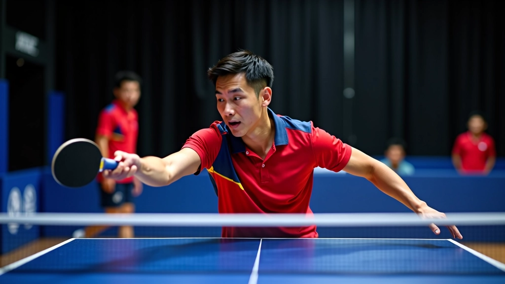
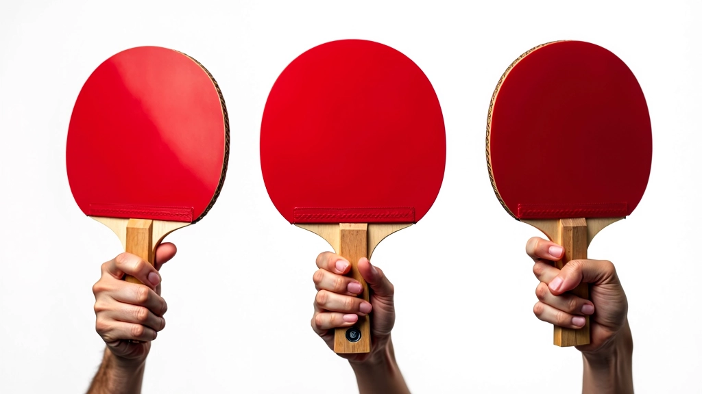
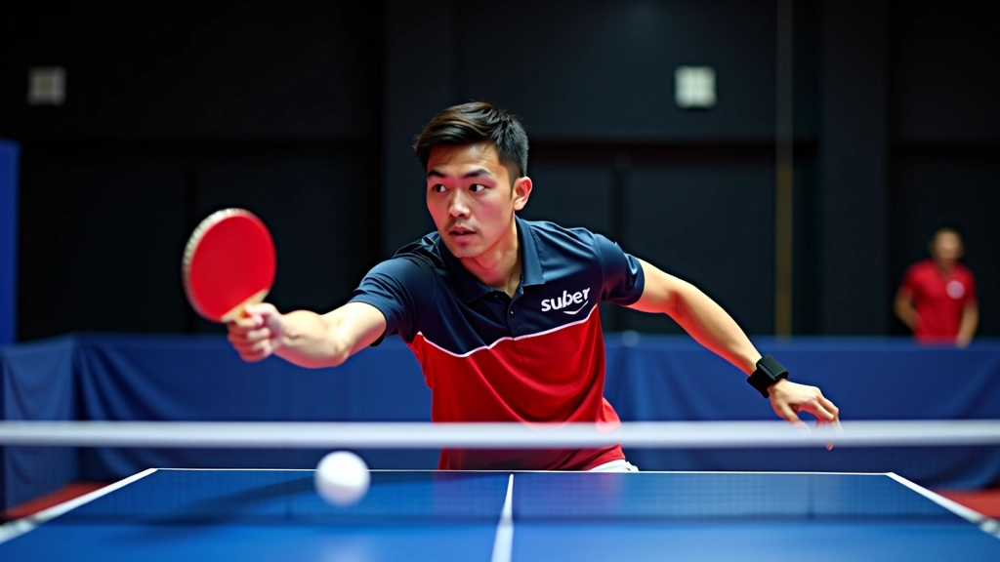
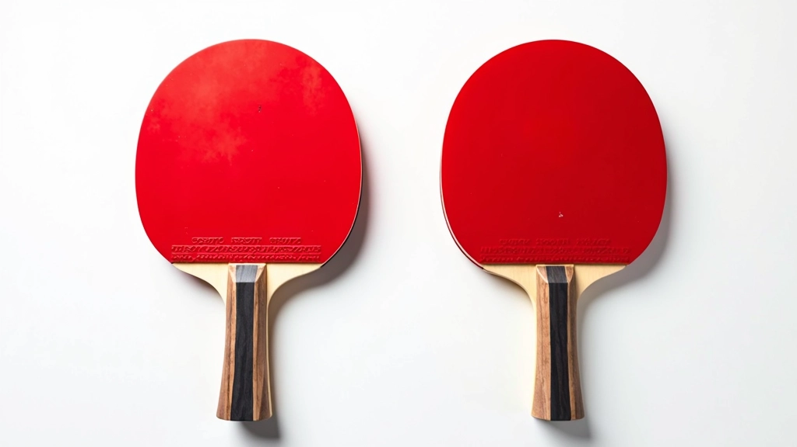
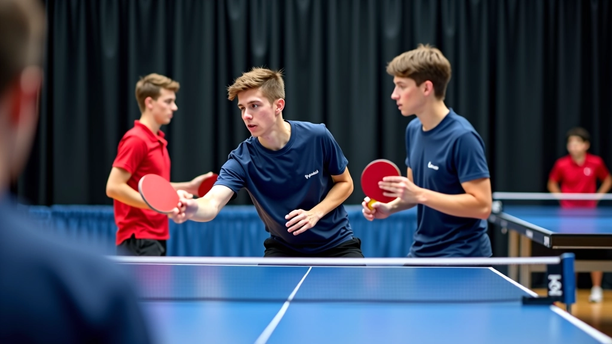

أساسيات القطع الدفاعي للمبتدئين
شرح مفصل لمبادئ القطع الدفاعي، موضع القدمين، حركة الذراع، والتوقيت الصحيح لبدء الحركة.
كيفية ضبط زاوية المضرب بشكل صحيح لإنتاج دوران قوي في القطع الدفاعي، مع تقنيات متقدمة للتحكم الأفضل. نتعلم اليوم كيف تؤثر زاوية المضرب مباشرة على جودة الدوران وسرعة الكرة.

الدوران في القطع الدفاعي ليس حادثة عشوائية. يبدأ كل شيء من زاوية المضرب. تقريباً 70% من جودة الدوران تعتمد على كيف تمسك المضرب وتوجهه نحو الكرة. عندما تضبط الزاوية بشكل صحيح، الكرة نفسها تخبرك بأنك تفعل شيئاً صحيحاً — تشعر بالاهتزاز، بالمقاومة الخفيفة في يدك.
في البداية، قد تشعر أن التركيز على الزاوية شيء صغير جداً. لكنه ليس كذلك. الفرق بين قطع دفاعي ضعيف وآخر قوي يمكن أن يكون درجة أو درجتان فقط من حيث الزاوية. هذه الدقة الصغيرة هي التي تحول اللاعب من شخص يعطل الهجمات إلى شخص يتحكم تماماً بما يحدث على الطاولة.

هناك ثلاث زوايا رئيسية تحتاج لفهمها. الأولى هي زاوية الوجه — الاتجاه الذي ينظر إليه سطح المضرب. الثانية زاوية الميل — كيف تدير المضرب من جانب إلى جانب. الثالثة زاوية الارتفاع — مدى رفع المضرب أو خفضه.
زاوية الوجه هي الأهم للدوران. عندما تريد دورانياً عالياً — أن تحصل على كرة ثقيلة جداً — تحتاج لإغلاق وجه المضرب قليلاً، حوالي 20-30 درجة. تخيل أنك تغلق باب ببطء شديد جداً. ليس إغلاقاً كاملاً، بل مجرد ميل طفيف. هذا الميل الصغير هو الذي يسبب الاحتكاك الذي ينتج الدوران.
تذكر: الزاوية الإغلاق الزائد يعني كرة أبطأ لكن دوران أقوى. الزاوية المفتوحة جداً تعطي سرعة أكثر لكن دوران أضعف. عليك إيجاد التوازن حسب ما تريده من الكرة.

المعلومات المقدمة هنا هي إرشادات تعليمية عامة مبنية على خبرة تدريبية. كل لاعب مختلف — الطول، طول الذراع، المرونة — كل هذا يؤثر على الزاوية المثالية لك. إذا كنت تتدرب مع مدرب، استشره دائماً حول التقنية الأنسب لك شخصياً. هذه المقالة تهدف إلى إعطاء فهماً عاماً، ليس تعليماً طبياً أو تدريباً متخصصاً.

الآن تفهم النظرية. لكن كيف تترجم هذا إلى حركة حقيقية؟ التدريب بسيط جداً. احصل على شريك — أي شخص — واطلب منه أن يرسل لك كرات عادية وبطيئة. أنت ستركز 100% على الزاوية فقط. نسَ السرعة، نسَ المسافة، ركز على الشعور بالزاوية في يدك.
ابدأ بزاوية مفتوحة جداً — حوالي 45 درجة — وأرسل الكرة ببساطة للخلف. لا تتوقع دورانياً قوياً. ثم قلل الزاوية تدريجياً، درجة تلو الأخرى. مع كل محاولة، شعر بكيف تتغير الكرة. متى تصبح أثقل؟ متى يزداد الدوران؟ بعد حوالي 15-20 محاولة، ستبدأ عضلاتك وأعصابك تتذكر الزاوية المناسبة.
معظم اللاعبين الجدد يرتكبون نفس الأخطاء. أولاً، يحاولون إغلاق المضرب كثيراً جداً في البداية. النتيجة؟ كرات عالية جداً وبطيئة جداً. المدافع يسهل عليه أن يهاجمها. الخطأ الثاني هو عدم الاستقرار — الزاوية تتغير من ضربة لأخرى. هذا يعني أن الدوران غير متسق.
الحل؟ ابدأ بزاوية متوسطة حوالي 15 درجة. حافظ عليها ثابتة. تدرب على 50 ضربة بنفس الزاوية بالضبط. ركز على الاستقرار أولاً، ثم على القوة. بعد أسبوعين، ستشعر أن المضرب أصبح امتداداً طبيعياً ليدك.


بعد أن تتقن الزاوية الأساسية، يمكنك البدء في تجربة. بعض الهجمات تتطلب دورانياً أعلى — غلق المضرب أكثر قليلاً. هجمات أخرى تحتاج سرعة أكثر — فتح المضرب قليلاً. اللاعب المتقدم يتنقل بين الزوايا المختلفة بسلاسة، دون تفكير واعي.
يستغرق الأمر حوالي 3-4 أشهر من التدريب المنتظم — حوالي 10 ساعات في الأسبوع — لتصبح هذه الحركة طبيعية تماماً. لكن المكاسب تبدأ من الأسبوع الأول. بعد أسبوعين من التدريب المركز، ستلاحظ أن دورانك أقوى وأكثر اتساقاً.
تحسين زاوية المضرب والتحكم بالدوران ليس سحراً. إنه علم وممارسة. ابدأ بفهم الزوايا الأساسية الثلاث. ركز على الاستقرار قبل السرعة. تدرب على التحكم الدقيق بأصغر التغييرات في الزاوية. في غضون أسابيع قليلة، ستصبح ضرباتك الدفاعية أداة حقيقية على الطاولة، وليست مجرد محاولة للبقاء في المباراة.
والأهم من كل هذا — استمتع بالعملية. هذه الدقة الصغيرة في الزاوية هي ما يجعل تنس الطاولة رياضة جميلة. كل ضربة تعلمك شيئاً جديداً عن نفسك وعن الكرة.
اقرأ: تمارين تدريبية عملية من نادي الشمساكتشف المزيد من تقنيات القطع الدفاعي
شرح مفصل لمبادئ القطع الدفاعي، موضع القدمين، حركة الذراع، والتوقيت الصحيح لبدء الحركة.

برنامج تدريبي مجرب يتضمن تمارين عملية وحركات متكررة لتطوير مهارات القطع الدفاعي.

تقنيات متقدمة للاعبين المتمرسين، تشمل الدمج مع حركات أخرى والرد على الهجمات القوية.